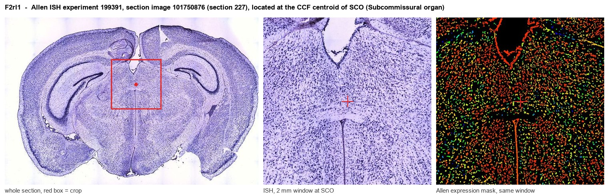

F2rl1
Proteinase-activated receptor 2 (PAR-2) (Coagulation factor II receptor-like 1) (G protein-coupled receptor 11) (Thrombin receptor-like 1)
Spatial tier: STRICT_EXCLUSIVE · Class: GPCR · Top region: SCO (Subcommissural organ) · Positive regions: 1/554
53.6Discovery Score
45.5Targetability Score
CEvidence grade C
What this means: F2rl1: predicted fine-region profile is strict-exclusive, with 1 positive regions out of 554 (limit 12); direct spatial validation is required.
Function in SCO: evidence, prediction, innovation
- Gene function
- F2rl1 encodes protease-activated receptor 2 (PAR2), a class-A GPCR activated irreversibly when trypsin, tryptase, kallikreins or factor Xa cleave its N-terminus to expose a tethered ligand (SLIGRL in mouse). Via Gq/Ca2+, Gi and beta-arrestin/ERK it senses extracellular proteolysis, driving secretion, inflammation and pain.
- Region function
- The subcommissural organ is a secretory ependymal gland under the posterior commissure at the third-ventricle/aqueduct junction, releasing SCO-spondin into CSF to form Reissner's fibre and shaping aqueduct patency, CSF flow and axial morphogenesis.
- Published in this region
- inferred No region-specific literature found. Closest: PAR2 is functional in CNS glia and neurons and its blockade reduces EAE neuroinflammation (Eftekhari et al. 2024), while choroid plexus mast cells, a tryptase source and PAR2 activator, cause tumour-associated hydrocephalus (Li et al. 2023).
- Predicted function
- Prediction: PAR2 would make SCO ependymal cells CSF proteolysis sensors, coupling tryptase, kallikrein or coagulation activity after haemorrhage to Ca2+ rises, altered ciliary beating and SCO-spondin exocytosis. Sspo-CreER x F2rl1-flox deletion should protect Reissner's fibre and aqueduct patency after intraventricular blood; intracerebroventricular SLIGRL-NH2 should trigger degranulation and ventriculomegaly.
- Innovation
- ★★★★★ 5/5 PAR2 is unstudied in the SCO although CSF protease signalling is a leading mechanism of post-haemorrhagic hydrocephalus.
- Tools
- F2rl1-null (F2rl1tm1Mslb) and F2rl1-flox mice; Sspo-Cre, Sspo-CreER (Zhang et al. 2024); agonists SLIGRL-NH2, 2-furoyl-LIGRLO-NH2, AC-264613; antagonists GB88, I-191, biased C781; anti-PAR2 antibody SAM11.
- References
Direct evidence located at the region

Allen ISH experiment 199391, section image 101750876 (section 227): the section that contains the CCF centroid of Subcommissural organ according to the Allen image-to-atlas alignment (reference_to_image), with a 2 mm window around that point. Left: whole section, red box = window. Middle: ISH signal. Right: Allen's expression-mask view of the same window. open this image in the Allen viewer
Look it up yourself: Allen Mouse Brain ISH for F2rl1Allen reference atlas: SCO (structure 599626923)ABC Atlas MERFISH viewer(in the ABC Atlas choose dataset MERFISH-C57BL6J-638850-CCF, colour cells by gene "F2rl1" or by parcellation_substructure "SCO")All genes confined to SCO + 3-D brain
Direct spatial evidence
MERFISH REGION LOCATOR

DIRECT ALLEN ISH

DIRECT ALLEN ISH

Regional expression figure

Predicted WMB × fine-CCF profile; not direct full-transcriptome spatial measurement.
Spatial profile
Evidence and specificity
- Evidence status
- PREDICTED_FINE
- Direct sources
- None; predicted localization only
- Exclusive threshold
- 12 positive regions out of 554
- Spatial specificity
- 0.440
- Top-region fraction
- 0.359
- Filter status
- PASS
Interpretation limits
- Cell-type-to-region projection is imputed expression, not direct spatial measurement.
- Adult reference atlases do not establish stability across age, sex, strain, state, or disease.
- Transcript abundance does not guarantee protein abundance or genetic-tool performance.